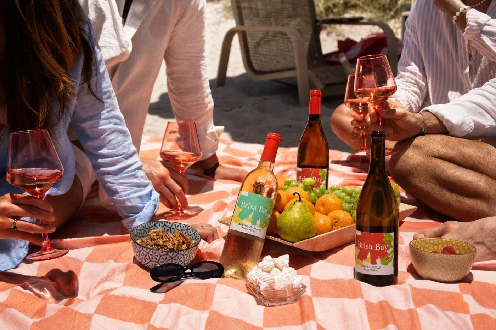
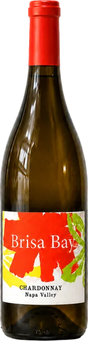
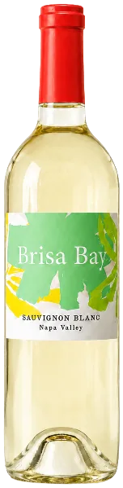

Two bottles, one breeze.
Scroll to meet the wines
{{ liveLabel }}
Chardonnay
A brighter side of Napa Valley made for warm afternoons. Waves of ripe white peach and fresh citrus meet a tender texture and a mouthwatering acidity that quietly invites another sip.
- Profile
- Ripe peach, bright citrus, and a smooth, tender finish.
- Best served
- Cold, during a long lunch that rolls right into dinner.
Sauvignon Blanc
Our very first release: bright, energetic, and easygoing. Guava, passionfruit, and tropical flowers lead into juicy pineapple, lime, and a cool vein of stony minerality that lingers.
- Profile
- Tropical fruit, juicy lime, and a crisp vein of stony minerality.
- Best served
- Chilled, the second the sun comes out and the music starts.

